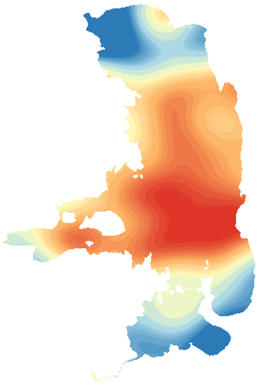

LakeScope › MT
Flathead Lake today
Updated 2026-11-14 - Atlas Labs
46°F water, level falling, near normal, calm this afternoon.
Water level
2890.72 ft
USGS gauge 12371550 - 2026-11-14
7-day trend: falling (-0.29 ft). Compared with normal for this date: -0.2 ft (same weeks, 2016-2025).
Water clarity and algae
No fresh view yet Clouds have hidden the lake lately.
Surface temperature
46°F
seen from space on 2026-11-12

Ice
Open - 0% ice cover
Estimate from weather and satellite, not a measurement. Check the ice yourself before going on it.
Weather, next 3 days
| Day | Sky | High / low | Wind | Rain |
|---|---|---|---|---|
| Saturday | Chance Light Rain | 48 / 39°F | 8 mph SW | 44% |
| Sunday | Partly Sunny then Slight Chance Light Rain | 50 / 42°F | 7 mph S | 21% |
| Monday | Light Rain | 46 / 38°F | 6 mph SSW | 78% |
Sunrise 07:41 - sunset 16:59 - Waxing crescent. National Weather Service.
Get the LakeScope app: alerts and the 3-D view of Flathead Lake